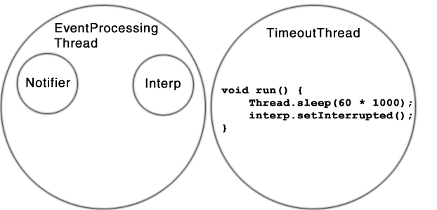

Jacl includes a feature that makes it possible
to interrupt execution of an interpreter. When
interrupted, a Jacl interp will cleanup each
frame on the Tcl call stack and dispose of the
interrupted interpreter. Typically, a developer
would invoke the Interp.setInterrupted()
method from a thread other than the one processing events.
It is also possible to invoke the setInterrupted()
method directly from Tcl code using the java package.
The examples that follow show both usages.
Assume that the following Tcl commands have been evaluated:
package require java proc p1 {} { p2 } proc p2 {} { p3 } proc p3 {} { [java::getinterp] setInterrupted }
Just before the setInterrupted method is invoked
in the proc p3, the Tcl stack would look like this:
Frame: p3 Frame: p2 Frame: p1 Global
When invoked, the setInterrupted method will
set a flag in the Interp object to indicate
that execution should be interrupted. This flag is then
checked at the end of the command evaluation operation
and a TclInterruptedException is raised.
This TclInterruptedException is a
Java exception that extends the unchecked
RuntimeException class.
java.lang.RuntimeException
-> tcl.lang.TclInterruptedException
When the TclInterruptedException is raised,
stack frames for the p3, p2, and p1 commands will be cleaned
up in order. The TclInterruptedException
should then be caught in the outermost event processing loop.
This is the main loop that is processing Tcl events using
Notifier.doOneEvent(). See the
EventLoop documentation for information
about basic event loop processing. The EventLoop documentation
describes a basic event loop, a simplified version might look like:
import tcl.lang.*; public class EventProcessingThread extends Thread { Interp interp; public void run() { // Allocate Interp while (true) { interp.getNotifier().doOneEvent(TCL.ALL_EVENTS); } } }
Unfortunately, the basic event loop does not properly support
handling of a TclInterruptedException. The basic
event loop does not work properly when a
TclInterruptedException is raised in a thread
that is processing events for multiple interpreters. When
one interpreter is interrupted, events for other interpreter(s)
in the thread should continue to be processed. Because the
basic event loop does not catch a TclInterruptedException,
the default Java behavior is to terminate the thread. This
problem can be fixed by placing a try around the event
processing call and using the Notifier.hasActiveInterps()
API to detect when all interps in the thread have been disposed of.
The following example shows an event processing loop that supports
interruption.
import tcl.lang.*; public class EventProcessingThread extends Thread { Interp interp; public void run() { // Allocate Interp Notifier notifier = interp.getNotifier(); while (notifier.hasActiveInterps()) { try { notifier.doOneEvent(TCL.ALL_EVENTS); } catch (TclInterruptedException tie) { tie.disposeInterruptedInterp(); } } } }
A developer need not write out all the logic described above
as the Notifier class provides a utility method named
processTclEvents. This utility method implements the
while loop functionality seen above, so a developer need only
write the following:
import tcl.lang.*; public class EventProcessingThread extends Thread { Interp interp; public void run() { // Allocate Interp Notifier.processTclEvents(interp.getNotifier()); } }
The interpreter interrupt feature is particularly useful
when implementing services that may need to be terminated
when a condition is met. For example, one might want to
evaluate a script but define a timer that will interrupt
the interpreter if the script takes longer than 60
seconds to run. The timer could be implemented as
a separate Java Thread that would go to sleep
and then invoke the setInterrupted API.

It is perfectly legal to invoke the setInterrupted API
from a thread other than the one processing events. Thread safety
issues are handled inside the setInterrupted method,
so no explicit synchronization is needed in user code. Also note
that the setInterrupted method will do nothing and
return if the interp in question was already deleted or interrupted,
so the caller need not worry about checking these conditions before
invoking this method from a timeout thread.
The only place user code should catch a TclInterruptedException
is after invoking doOneEvent in the main event processing loop.
A TclInterruptedException can't be caught using Tcl's
catch command. It is also not possible to catch a
TclInterruptedException using the java::try command.
If a TclInterruptedException could be caught via
java::try then it could be ignored, and that could
result in unpredictable behavior. Even so, a finally block passed to a
java::try command will still be executed when a
TclInterruptedException is raised. The following
example demonstrates this behavior:
package require java
proc p1 {} {
[java::getinterp] setInterrupt
}
proc p2 {} {
java::try {
p1
} catch {Exception e} {
# This block will not be run since it is
# not possible to catch a TclInterruptedException
# using java::try
puts "catch run in p2"
} finally {
# This finally block will be run
puts "finally run in p2"
}
}
When the p2 command is invoked it will invoke p1
and then the interpreter will be interrupted. When the stack frame for
the p2 command is cleaned up the finally block is evaluated
and "finally run in p2" is printed to the console. Note
that the catch block is not run even though java.lang.Exception
is a superclass of tcl.lang.TclInterruptedException.
Users should take care to keep the finally block for a java::try
command as simple as possible and use it only to cleanup resources before
disposing of the stack frame. The finally block should not invoke commands
like update, vwait, or other potentially slow operations since this could
delay interpreter interruption.
Users should take care not to accidentally catch and ignore a
TclInterruptedException in Java code. Improper
exception handling in Java code is a common problem.
Poorly written code like the following would break the
interpreter interrupt feature in Jacl.
public
class BrokenCmd implements Command {
public void cmdProc(Interp interp, TclObject[] objv)
throws TclException
{
try {
interp.eval("cmd");
} catch (Exception e) {
// Ignore exception
}
}
}
In most cases, the caller would only want to catch exceptions
that are a subclass of TclException. Using
TclException instead of Exception
is a better coding practice and will not break the
interrupt feature. The same logic applies to catching
Throwable, and RuntimeException.
Copyright © 1997-1998 Sun Microsystems, Inc.